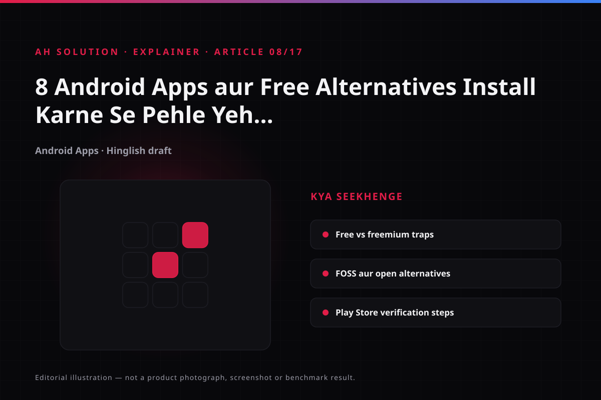

Kai baar hum paid app ka free alternative dhundhte hain, lekin har "free" app sach mein free nahi hota — kuch freemium hote hain, kuch ads se chalte hain aur kuch data tracking se.
Video ke official description se exact 8 app names verify ho gaye hain, isliye unhe editorial guess ki jagah video claim ke roop mein neeche list kiya gaya hai. Saath hi framework bhi diya gaya hai jisse aap khud compare karke safe choose kar sakein; safe selection ke liye choose-android-apps-safely.html bhi hai.
Original video: 8 Amazing Android Apps You Should Try! 🔥 Best Free Alternatives Video published: 2021-04-23T04:58:15Z · Duration: 08:00
Free Alternative Dhundhne Ka Sahi Approach
Jab koi paid app ka alternative dhund rahe hon, to sirf "free hai" se nahi, balki "kya zaruri features milte hain" se decide karein. Feature parity expect karna hamesha realistic nahi hota, lekin core functionality chahiye honi chahiye.
Approach:
- Core features identify karein: Kis paid app se aap exactly kya chahte hain? Sirf wahi list banao.
- Must-have vs nice-to-have: Nice-to-have skip karke core pe focus karein.
- Trade-offs accept karein: Free alternative mein ads, watermarks, limited exports ya cloud limits ho sakte hain.
Freemium, Ads aur "Free" Ka Reality
"Free" ka matlab alag-alag ho sakta hai. Ye samajhna zaruri hai taaki baad mein surprise na ho.

| Model | Explanation | Kya Dhyaan Rakhein |
|---|---|---|
| Ad-supported | App free hai lekin ads dikhata hai | Ad frequency reasonable hai ya annoying hai? |
| Freemium | Basic free, advanced features paid | Kya core features unlock hone ke liye pay karna padega? |
| Open Source (FOSS) | Source open, usually no ads/tracking | Transparency achhi hai, lekin UI/UX different ho sakta hai |
| Trial-based | Limited time free, fir subscription | Auto-renewal terms check karein |
Feature-by-Feature Comparison Kaise Karein
Comparison simple table se bhi kaafi clear ho jata hai. Jab aap alternatives shortlist karein, to ye table fill karke dekhein:
| Feature | Paid App | Alternative A | Alternative B | Notes |
|---|---|---|---|---|
| Core task | Yes/No | Yes/No | Yes/No | Jo sabse zaruri hai |
| Ads | Minimal/None | High/Low | High/Low | Tolerance check karein |
| Offline support | Yes/No | Yes/No | Yes/No | Zaruri hai kya? |
| Export/Share | Full | Limited | Full | Daily use affect karega |
| Privacy | Known | Check | Check | Permissions + policy dekhein |
Ye method se emotion se nahi, logic se decision hoga.
Privacy, Permissions aur Data Collection
Free apps ka business model data ho sakta hai. Permissions scrutiny zaruri hai.
- Trackers check: Agar possible ho to app ka privacy profile dekhein. Play Store reviews aur community feedback bhi help karte hain.
- Location/files access: Kyun chahiye? Justify hai ya excess hai?
- Network access: Background data sync zaruri hai ya unnecessary?
- Account requirement: Kya app bina account use hota hai ya login force karta hai?
Agar app bina reason ke zyada permissions maang raha hai, to better alternative dhundhna chahiye.
Open Source / FOSS Alternatives Pe Dhyaan Dein
Kayi baar paid commercial apps ke achhe FOSS alternatives milte hain. FOSS ka matlab ye nahi ki perfect hain, lekin usually transparent hote hain aur ads/tracking kam hote hain.
Editorial addition (video claim nahi): ads/tracking-free apps ke liye F-Droid repository verify hua hai, aur browser ke free alternative ke roop mein Firefox ki Play listing bhi verified hai — dono current editorial suggestions hain, video ke list ka part nahi.
Lekin FOSS apps mein bhi trade-offs hote hain — UI simple ho sakta hai, documentation kam ho sakta hai, ya active development slow ho sakta hai. Isliye core needs match ho rahe hain ya nahi ye check zaruri hai.
Play Store Se Safe Selection
Install se pehle ye quick checks follow karein:
- Developer credibility: Genuine developer hai ya lookalike?
- Recent reviews: 1-star reviews pattern dekhein.
- Permissions pre-check: Install se pehle permissions list dekhein.
- Update recency: Abandoned app avoid karein.
- Download trends: Sudden viral spike pe extra care karein.
Aur hamesha choose-android-apps-safely.html ka detailed checklist refer karein.
Video Ke 8 Apps aur Kya Verify Hua
Video ke official description se app names confirm hue: App Market, Aptoide, Brave Browser, Picnic, YMusic, Thop TV, Flix 4U aur Feem; bonus app Gravity Launcher. Sirf teen ke official sources verify ho paye — baaki listing is pass mein available nahi thi.
| App | Developer / source | Free vs paid status | Verification |
|---|---|---|---|
| Brave Browser | Brave Software | App free; optional Brave VPN/premium paid | play.google.com verified · brave.com |
| Aptoide | Aptoide (aptoide.com) | Store free; apps third-party listings | aptoide.com verified — Play Store par nahi milta |
| Feem | FeePerfect AG | App free; ads aur in-app purchases | feem.io verified · Play listing verified |
| App Market | — | Exact listing verify nahi hui | Source nahi mila — install se pehle developer check karein |
| Picnic | — | Exact listing verify nahi hui | Source nahi mila — same check apply karein |
| YMusic | — | Exact listing verify nahi hui | Source nahi mila — sideload se pehle source verify karein |
| Thop TV | — | Unofficial streaming app | Official listing nahi mili — legality/security risk high, avoid karein |
| Flix 4U | — | Exact listing verify nahi hui | Source nahi mila — same check apply karein |
| Gravity Launcher (bonus) | — | Exact listing verify nahi hui | Source nahi mila — launcher customization app |
Free vs paid ka pattern: Brave jaise browsers core features free dete hain aur premium optional hai, jabki freemium apps advanced features lock karte hain. Subscription traps, ads aur permissions har app pe alag hain — upar wale framework apply karein. Table mein jin apps ka source verify nahi hua, unhe blind-install na karein.
Troubleshooting aur limitations
Free alternatives lete waqt realistic limitations expect karein:
- Feature gaps: Har cheez exact same nahi hogi.
- UX differences: Workflow thoda alag ho sakta hai.
- Ads fatigue: Pehle manageable lage, baad mein annoying ho sakta hai.
- Sync limits: Cloud features locked ho sakte hain.
- Long-term viability: Free alternative bhi discontinue ho sakta hai.
Safety aur privacy
Security pe compromise na karein. APK sites se sideload avoid karein unless absolutely necessary aur source verified ho. Official Play Store prefer karein. Privacy checklist follow karein — jab doubt ho, skip karo.
Frequently asked questions
Video mein 8 apps kaunse hain?
Video ke official description se: App Market, Aptoide, Brave Browser, Picnic, YMusic, Thop TV, Flix 4U aur Feem, plus bonus Gravity Launcher. Har ek ka status table mein diya hai; sirf Brave, Aptoide aur Feem ke official sources verify ho paye.
Kya FOSS alternative hamesha better hota hai?
Zyada tar privacy perspective se better hota hai, lekin har use case ke liye UI/UX match nahi karta. Apne needs ke hisaab se decide karein.
Freemium app install karna safe hai kya?
Safe ho sakta hai agar reputable developer hai aur permissions reasonable hain. Lekin in-app purchases aur subscription traps se aware raho.
Alternative select karne mein kitna time spend karna chahiye?
2–5 minute ka quick check usually enough hai — permissions, reviews, core features match ho rahe hain ya nahi ye dekh lein.
Kya ek hi app ke multiple alternatives try karne chahiye?
Zyada nahi — 2 max shortlist karein, dono use karke dekhein, fir best fit choose karein. Zyada try se decision paralysis hota hai.
Final recommendations
Free alternatives smartly choose karo — feature match check karo, monetization model samjho, privacy scrutinize karo. Hype follow mat karo, apna actual workflow dekho. Video ke description se app names confirm ho chuke hain, par unka status (verified ya pending) table mein diya hai — sirf verified links par bharosa karo. Ek well-chosen free alternative aapka time aur paisa dono bacha sakta hai, bas evaluation thoda careful hona chahiye.
Resources aur official links
- Android Help: apps kahan se download karein — sideload aur unknown sources ka risk.
- Google Play Protect — install se pehle apps scan, risky permissions par alert.
- F-Droid — ads/tracking-free FOSS apps ka repository, free alternatives dhundhne ke liye.